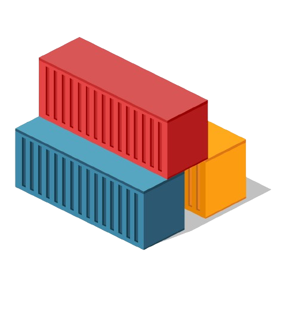

Containers são ambientes isolados utilizados para empacotar aplicações. Esses container contém todos os elementos necessários para serem executados em qualquer ambiente.

REDE DE COMPUTADORES II
Containers são ambientes isolados utilizados para empacotar aplicações. Esses container contém todos os elementos necessários para serem executados em qualquer ambiente.